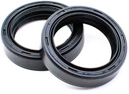

Retentores Industriais
Projetados para reter óleos, graxas e outros fluidos em sistemas rotativos, além de impedir a entrada de poeira, abrasivos e contaminantes externos. Os retentores garantem vedação dinâmica de alta precisão em eixos mecânicos, protegendo rolamentos e mantendo a integridade dos equipamentos industriais.
Variações Disponíveis

Retentor Industrial
Elemento de vedação dinâmica para eixos rotativos com lábio principal ajustado por mola helicoidal. Oferece alta eficiência no estancamento de lubrificantes e excelente proteção contra agentes externos em diversas condições operacionais.
Solicitar CotaçãoRetentor Industrial
Elemento de vedação dinâmica para eixos rotativos com lábio principal ajustado por mola helicoidal. Oferece alta eficiência no estancamento de lubrificantes e excelente proteção contra agentes externos em diversas condições operacionais.
Solicitar CotaçãoRetentor Industrial
Elemento de vedação dinâmica para eixos rotativos com lábio principal ajustado por mola helicoidal. Oferece alta eficiência no estancamento de lubrificantes e excelente proteção contra agentes externos em diversas condições operacionais.
Solicitar CotaçãoFicha Técnica Geral - Retentores Industriais
| Especificação | Detalhes |
|---|---|
| Elastômeros e Materiais: | Borracha Nitrílica (NBR), Fluorcarboneto (Viton/FKM), Silicone (MVQ), Poliacrilato (ACM) e PTFE (Teflon). |
| Perfis e Modelos: | Lábio simples, lábio duplo (com antipoeira), carcaça metálica aparente, carcaça revestida e modelos reforçados. |
| Mola de Tração: | Aço Carbono zincado ou Aço Inoxidável (AISI 302 / AISI 316) para ambientes corrosivos. |
| Faixa de Temperatura: | -40°C a +100°C (NBR) / -20°C a +200°C (Viton/FKM) / -60°C a +200°C (Silicone). |
| Velocidade Periférica: | Até 12 m/s (NBR) / Até 25 m/s (Viton/FKM) / Até 35 m/s (PTFE). |
| Pressão de Trabalho: | Até 0,5 bar (modelos convencionais) / Até 10 bar (perfis especiais de alta pressão). |
| Aplicações Típicas: | Eixos de motores elétricos, redutores de velocidade, bombas industriais, compressores, sistemas automotivos e caixas de transmissão. |
| Normas Atendidas: | DIN 3760, DIN 3761, ISO 6194 e diretivas RoHS. |